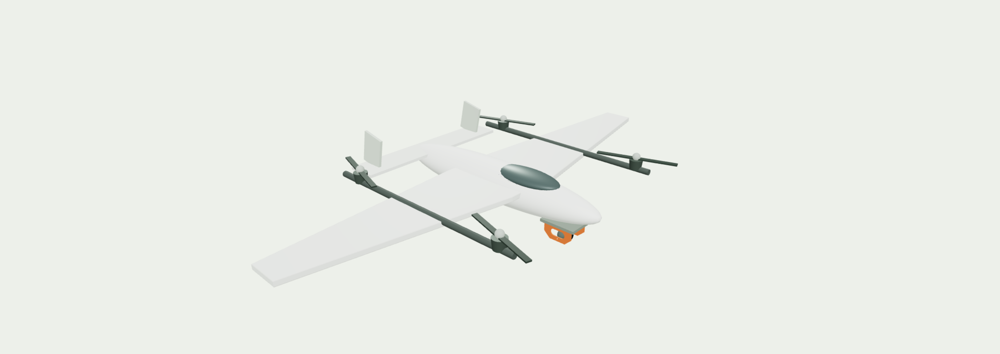
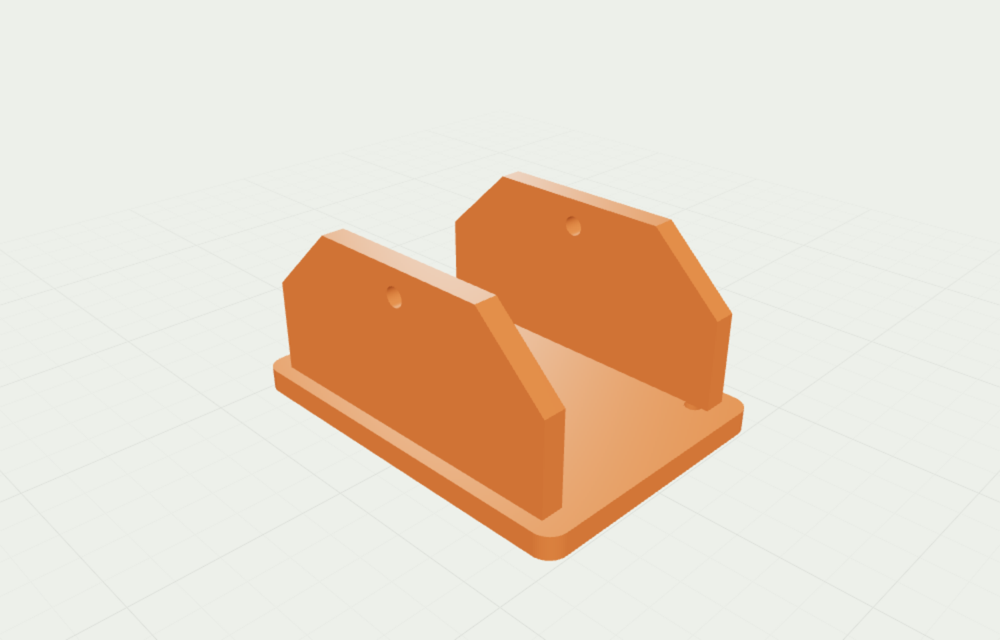
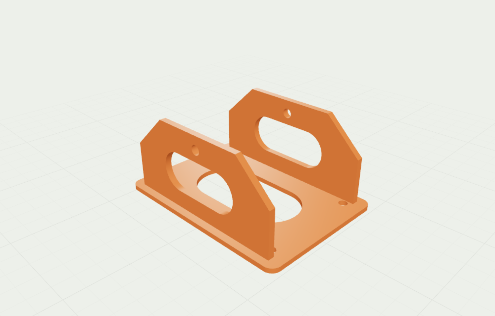

MongoDB Atlas Hackathondv
Vote for
Da Vinci
Recursive Improvement CAD harness

63.7%
less sensor-mount mass
83.54 g → 30.33 g · 8 design iterations


Recorded sensor-mount study under fixed engineering screening checks. Simulation estimates; not physical validation.
AI agents generate CAD, evaluate designs, and improve their tools and working context between attempts.
1. Reflect and remember2. Create and reuse tools3. Evaluate and revise
MongoDB Atlas for Scalable Model Improvement
Documents preserve designs and evaluations. Vector Search retrieves prior results.
GridFS stores CAD files and source snapshots.
Explore the designs.
Vote for Da Vinci.
Sensor mount · Parallel gripper · VTOL
Interactive 3D models and measured results.